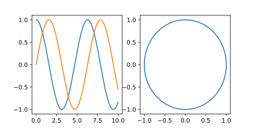

Reto de métodos numéricos: Día 19
Durante octubre (2017) estaré escribiendo un programa por día para algunos métodos numéricos famosos en Python y Julia. Esto está pensado como un ejercicio, no esperen que el código sea lo suficientemente bueno para usarse en la "vida real". Además, también debo mencionar que casi que no tengo experiencia con Julia, así que probablemente no escriba un Julia idiomático y se parezca más a Python.
Integración de Verlet
Hoy tenemos la técnica de integración de Verlet. Este método se usa de formae xtendida para integrar las ecuaciones de movimiento de muchos sistemas, como en mecánica orbital o dinámica molecular. Una de las razones principales para escoger este método es que es un integrado simpléctico.
La fórmula para avanzar en el tiempo es
donde \(A(\mathbf{x}_n)\) es la aceleración para el instante de tiempo actual.
A continuación se presentan los códigos.
Python
from __future__ import division, print_function import numpy as np import matplotlib.pyplot as plt def verlet(force, x0, v0, m, t, args=()): ndof = len(x0) ntimes = len(t) x = np.zeros((ndof, ntimes)) dt = t[1] - t[0] x[:, 0] = x0 F = force(x0, v0, m, t, *args) x[::2, 1] = x0[::2] + v0[::2]*dt + 0.5*F[::2]*dt**2/m x[1::2, 1] = x0[1::2] + v0[1::2]*dt + 0.5*F[1::2]*dt**2/m for cont in range(2, ntimes): dt = t[cont] - t[cont - 1] v = (x[:, cont - 1] - x[:, cont - 2])/dt acel = force(x[:, cont - 1], v, m, t, *args) acel[::2] = acel[::2]/m acel[1::2] = acel[1::2]/m x[:, cont] = 2*x[:, cont - 1] - x[:, cont - 2] + acel*dt**2 return x spring_force = lambda x, v, m, t, k: -k*x x0 = np.array([1.0, 0.0]) v0 = np.array([0.0, 1.0]) m = np.array([1.0]) t = np.linspace(0, 10.0, 1000) k = 1.0 x = verlet(spring_force, x0, v0, m, t, args=(k,)) #%% Plot plt.figure(figsize=(6, 3)) plt.subplot(121) plt.plot(t, x[0, :]) plt.plot(t, x[1, :]) plt.subplot(122) plt.plot(x[0, :], x[1, :]) plt.show()
Julia
using PyPlot function verlet(force, x0, v0, m, t; args=()) ndof = length(x0) ntimes = length(t) x = zeros(ndof, ntimes) dt = t[2] - t[1] x[:, 1] = x0 F = force(x0, v0, m, t, args...) x[1:2:end, 2] = x0[1:2:end] + v0[1:2:end]*dt + 0.5*F[1:2:end]*dt^2./m x[2:2:end, 2] = x0[2:2:end] + v0[2:2:end]*dt + 0.5*F[2:2:end]*dt^2./m for cont = 3:ntimes dt = t[cont] - t[cont - 1] v = (x[:, cont - 1] - x[:, cont - 2])/dt acel = force(x[:, cont - 1], v, m, t, args...) acel[1:2:end] = acel[1:2:end]./m acel[2:2:end] = acel[2:2:end]./m x[:, cont] = 2*x[:, cont - 1] - x[:, cont - 2] + acel*dt^2 end return x end spring_force(x, v, m, t, k) = -k*x x0 = [1.0, 0.0] v0 = [0.0, 1.0] m = [1.0] t = linspace(0, 10.0, 1000) k = 1.0 x = verlet(spring_force, x0, v0, m, t, args=(k,)) #%% Plot figure(figsize=(6, 3)) subplot(121) plot(t, x[1, :]) plot(t, x[2, :]) subplot(122) plot(x[1, :], x[2, :]) show()
En ambos casos el resultado es la siguiente gráfica.
Comparación Python/Julia
Respecto al número de líneas tenemos: 40 en Python y 40 en Julia. La comparación
en tiempo de ejecución se realizó con el comando mágico de IPython %timeit
y con @benchmark en Julia.
Para Python:
%timeit -n 100 verlet(spring_force, x0, v0, m, t, args=(k,))
con resultado
100 loops, best of 3: 26.5 ms per loop
Para Julia:
@benchmark verlet(spring_force, x0, v0, m, t, args=(k,))
con resultado
BenchmarkTools.Trial: memory estimate: 4.36 MiB allocs estimate: 101839 -------------- minimum time: 73.159 ms (0.00% GC) median time: 74.883 ms (0.00% GC) mean time: 75.464 ms (1.02% GC) maximum time: 80.017 ms (4.87% GC) -------------- samples: 67 evals/sample: 1
En este caso, podemos decir que el código de Python es alrededor de 3 veces más rápido que el de Julia.
Comentarios
Comments powered by Disqus